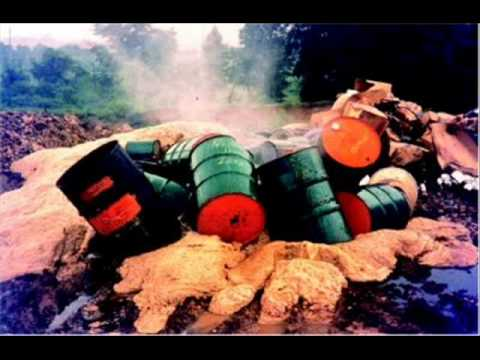
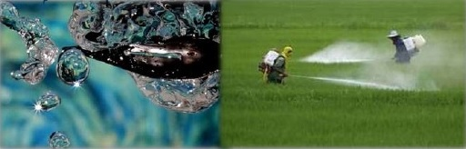
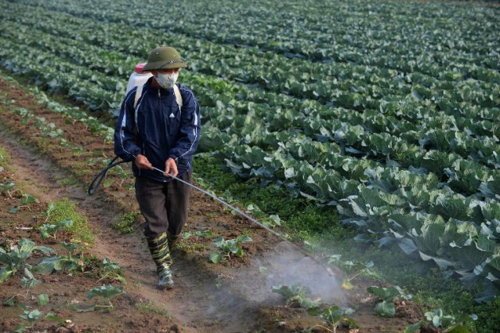
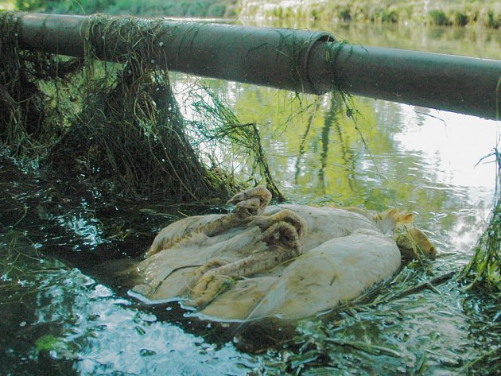
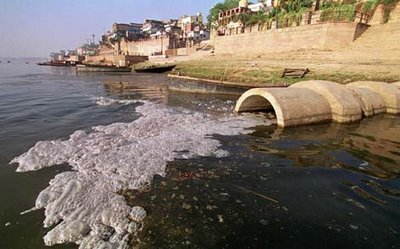
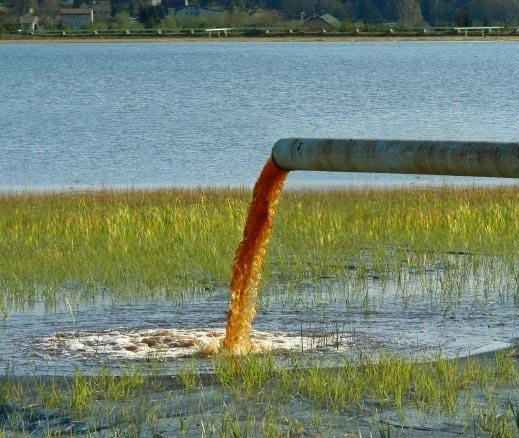

CONTAMINANTES QUIMICOS DE AGUA EN MEXICO
BIENVENIDOS A NUESTRA PAGINA SOBRE LOS CONTAMINANTES QUIMICOS DE AGUA, AQUI ENCONTRARAS VARIAS COSAS SOBRE ESTE TEMA
DE LO MAS COMUN HASTA LO MAS RELEVANTE HASTA EL MOMENTO ASI COMO PEQUEÑAS SINOPSIS, DEFINICIONES Y TABLAS DE ALGUNOS
ARTICULOS RELACIONADOS A ELLO.
INDICE
SECCION I.- DEFINICION DE LO QUE ES UN CONTAMINANTE QUIMICO
SECCION II.- TIPOS DE CONTAMINANTES QUIMICOS
SECCION III.- CAUSAS
SECCION IV.- CONSECUENCIAS
SECCION V.- CONTAMINANTES EN EL AGUA
SECCION VIDEO DE APOYO

SECCION I.- DEFINICION DE LO QUE ES UN CONTAMINANTE QUIMICO
ESTA ES LA DEFINICION DE LO QUE ES UN CONTAMINANTE QUIMICO:
La contaminacion quimica puede referirse a lo siguiente:
los Contaminantes quimicos incluyen:
Se considera contaminante (agente) químico al elemento o compuesto químico cuyo estado y características
fisicoquímicas le permiten entrar en contacto con los individuos, de forma que pueden originar un
efecto adverso para su salud. Sus vías principales de penetración son la inhalatoria, la dérmica y la digestiva.
Si no te agrada esta seccion puedes saltarte al indice y seleccionar otro en el INDICE
SECCION II.- TIPOS DE CONTAMINANTES QUIMICOS
TIPOS DE CONTAMINANTES QUIMICOS DEL AGUA:
La contaminacion quimica puede referirse a lo siguiente:
a) BIODEGRADABLES :
Como nitratos y fosfatos procedentes de los fertilizantes o de la descomposicion de materia organica.
La porpia naturaleza es capaz de degradarlos.
b) NO BIODEGRADABLES:
Son compuestos obtenidos por la sistesis quimica tales como: plasticos,pesticidas.metales pesados,
no encuentran organismos con equipos enzimaticos capaces de transformar todo lo de materia biologica
en un conjunto de bacterias y parasitos.

Puedes dar clic aqui para ver mas informacion sobre este
articulo mas completo.
Si no te agrada esta seccion puedes saltarte al indice y seleccionar otro en el INDICE
SECCION III.- CAUSAS
AQUI HABLAREMOS SOBRE LAS CAUSAS DE LA CONTAMINACION QUIMICA DEL AGUA
| "CAUSAS" |
| CAUSAS |
| descripcion |
| 1) Desechos industriales |
La industria es uno de los principales factores que provocan la contaminación del agua.
Desafortunadamente, miles de empresas aún desconocen el buen uso que se debe dar a este recurso
y vierten cantidades de productos contaminantes derivados de sus procesos industriales. Los ríos y
los canales son los más afectados por estas malas prácticas. |
| 2) Aumento de las temperaturas |
|
Aunque no lo parezca, el calentamiento global también influye en la contaminación del agua. ¿Cómo es posible?
La explicación es sencilla: cuando un ecosistema sufre temperaturas por encima de las habituales,
las fuentes de agua disminuyen su cantidad de oxígeno, lo cual hace que el agua altere su composición. |
| 3) Uso de pesticidas en la agricultura |
|
La gran mayoría de los procesos agrícolas de nuestro tiempo emplean fertilizantes y productos químicos para el cultivo
y la producción de los alimentos. Pues bien, estos productos se filtran a través de canales subterráneos que,
en la mayoría de los casos, acaban en las redes de agua que utilizamos para nuestro consumo. Este agua difícilmente será
tratada para que vuelva a los canales aptos para el consumo. |
| 4) Deforestación |
|
La excesiva tala de árboles contribuye a que los ríos, los lagos y otras fuentes hídricas se sequen. Además de esto,
la tala de bosques no en todos los casos incluye la retirada de las raíces de los árboles que están en las orillas de los ríos,
lo cual provoca la aparición de sedimentos y bacterias bajo el suelo y la consiguiente contaminación de este preciado recurso. |
r> 5) Derrames de petróleo | |
Finalmente, no podemos olvidar una práctica que tradicionalmente ha provocado la contaminación de aguas en diversos puntos del planeta:
los vertidos de crudo y sus derivados. Dichos vertidos se deben al transporte deficiente del petróleo y a la filtración de productos como
la gasolina, que generalmente es almacenada en tanques bajo tierra; en muchos casos, los tanques tienen fugas y la sustancia se filtra a los
cuerpos que están a su alrededor, entre ellos las fuentes de agua aptas para el consumo humano. |
Si no te agrada esta seccion puedes saltarte al indice y seleccionar otro en el INDICE
SECCION IV.- CONSECUENCIAS DE LA CONTAMINACION QUIMICA DEL AGUA
AQUI LES MOSTRAMOS ESTA TABLA QUE CONTIENE ALGUNAS DE LAS CONSECUENCIAS DE CONTAMINAR DE MANERA QUIMICA EL AGUA:
Hay un gran número de contaminantes del agua que se pueden clasificar de muy diferentes maneras.
Una posibilidad bastante usada es agruparlos en los siguientes tabla:



| "CONSECUENCIAS" |
| CONSECUENCIAS |
| DESCRIPCION |
| ANIMALES MUERTOS EN EL AGUA |
El problema más grave de la contaminación del agua, es que mata la vida de los peces y animales acuáticos.
Los peces, cangrejos, pájaros, gaviotas, delfines, y muchos otros animales, en muchas ocasiones se encuentran
muertos en las playas debido a la contaminación de agua. Su hábitat se encuentra contaminado por culpa de los humanos. |
| ALTERACIÓN DE LA CADENA ALIMENTARIA |
|
Con el tiempo los seres humanos se van contaminando poco a poco ya sea por la alimentación o por el agua que consumen.
Pueden llegar a contraer hepatitis por el consumo de pescados y mariscos que han sido contaminados mediante las aguas.
También se puede contraer el cólera y otras muchas enfermedades muy graves causadas por el consumo de aguas contaminadas
y animales que han bebido de esta agua. |
| DESTRUCCIÓN DE LOS ECOSISTEMAS |
|
Debido a la contaminación del agua, muchos ecosistemas pueden ser modificados o destruidos, ya que los animales
se mueren o modifican sus hábitos para sobrevivir. Esta contaminación está producida por el descuido de los humanos
al desechar residuos contaminados en las aguas. |
Puedes dar clic aqui para ver un video sobre las consecuencias de la contaminacion quimica del agua hacia la salud.
Si no te agrada esta seccion puedes saltarte al indice y seleccionar otro en el INDICE
SECCION V.- CONTAMINANTES EN EL AGUA
AQUI LES MOSTRAMOS ESTA TABLA QUE CONTIENE ALGUNAS DE LOS PRINCIPALES CONTAMINANTES DEL AGUA:
| "PRINCIPALES CONTAMINANTES DEL AGUA" |
| CONTAMINANTE |
| DESCRIPCION |
| PARTÍCULAS SUSPENDIDAS EN EL AGUA |
Las partículas suspendidas en el agua pueden reducir la cantidad de luz solar que entra dentro del agua,
lo que altera el crecimiento de plantas fotosintéticas y micro-organismos.
La disminución del crecimiento de plantas y organismos en el agua, hace que los seres vivos marinos mueran y vayan desapareciendo. |
| RESIDUOS INDUSTRIALES |
|
Los contaminantes microbianos de las aguas residuales, generan enfermedades infecciosas a los seres
que viven en el agua. También generan enfermedades infecciosas a las personas a través del agua potable.
Hay poblaciones en las que la mortalidad aumenta, y una de las causas es la contaminación del agua potable que bebe la gente de esta zona. |
| SULFATOS |
|
La lluvia ácida, cambia el ph del agua, y la hace mucho más ácida. Esto daña la salud de la vida marina en los ríos y lagos.
La consecuencia del aumento de acidez en el agua, hace que los animales que viven en ella mueran. |
| MATERIA ORGÁNICA |
|
La materia orgánica que nosotros tiramos en el agua, provoca un aumento de algas, que provoca un agotamiento de oxígeno del agua.
Este fenómeno se conoce como eutrofización, y provoca la asfixia de los peces y otros animales acuáticos. |
| LOS METALES PESADOS |
Los metales pesados procedentes de industrias son muy peligrosos para los seres vivos que habitan en el agua,
ya que estos metales se pueden acumular en lagos y ríos cercanos a estas industrias. Estos tóxicos son muy perjudiciales.
|
Cómo resumen podemos señalar algunos de los principales contaminantes quimicos del agua son:
- compuestos orgánicos e inorgánicos disueltos o dispersos en el agua.
Los contaminantes inorgánicos son diversos productos disueltos o dispersos en el agua que provienen de descargas domésticas,
agrícolas e industriales o de la erosión del suelo. Los principales son cloruros, sulfatos, nitratos y carbonatos. También desechos ácidos,
alcalinos y gases tóxicos disueltos en el agua como los óxidos de azufre, de nitrógeno, amoníaco, cloro y sulfuro de hidrógeno (ácido sulfhídrico).
- Industrias
diversos productos químicos industriales de origen natural como aceites, grasas, breas y tinturas, y diversos productos químicos sintéticos como pinturas, herbicidas, insecticidas, etc.
- Empresas
todas las sustancias que promueven el crecimiento excesivo de reduccion de agua potable.
- Vaciados ilegal de aguas toxicas
diversos productos que fueron categorizados como agua toxica o (residuos industriales) son vaciados de manera ilegal en rios o lagos.
- Las concentraciones anormales de compuestos de nitrógeno en el agua
tales como el amoniaco o los cloruros se utilizan como índice de la presencia de dichas impurezas contaminantes en el agua.
- Residuos o sustancias radiactivas
(de las minas de uranio y de las plantas de procesamiento de estos metales, de las centrales nucleares,
de las industrias y de los laboratorios médicos y de investigación que utilizan materiales radiactivos).
Si no te agrada esta seccion puedes saltarte al indice y seleccionar otro en el INDICE

SECCION DE VIDEO DE APOYO
PARA QUE CONCLUIR EL TRMA LES DEJAMOS UN VIDEO DE APOYO CON EL CUAL PODRAN ENTERDER BIEN EL TEMA DE LOS CONTAMINANTES QUIMICOS DEL AGUA.
VIDEO: